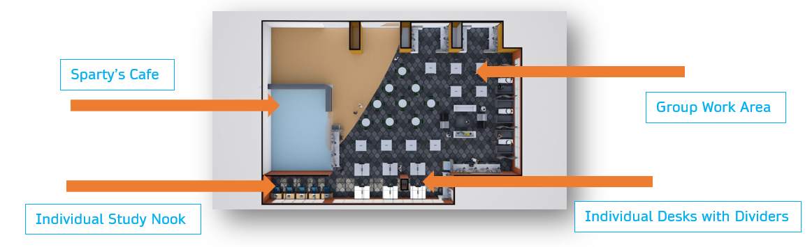

In my freshman year at Michigan State, I was able to take part in a professional project alongside a group of other students. The MSU library staff had been planning a redesign of the main library’s primary social space on the first floor. Their goal was to have different ideas pitched to them by groups like mine from the class that I was a part of. Our group spent hours of time brainstorming and getting down sketches and mockups for how we thought the library could operate more effectively and maintain the large flow of students and faculty throughout the long days. Our process included many different mock-ups and doing user research through interviewing many different users at different times of the day in the library space. All of our months of work concluded with a formal presentation to roughly 5-10 library staff members, who asked us questions and took many of our ideas into the design consideration process.
Date: 04/01/2021:
I and my classmates were tasked with presenting and informing
our peers with special techniques in CSS Code to improve our understanding
of the language and to teach useful CSS tricks and methods. I chose to present
on CSS Grid, a layout tool designed to easily align and section off elements of
a web page. This technique was useful to me to learn and present on due to multiple
reasons.